La Sapinière
 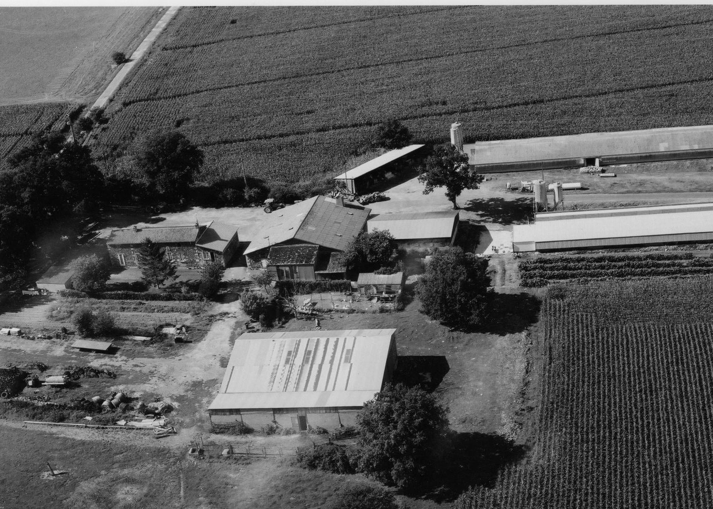
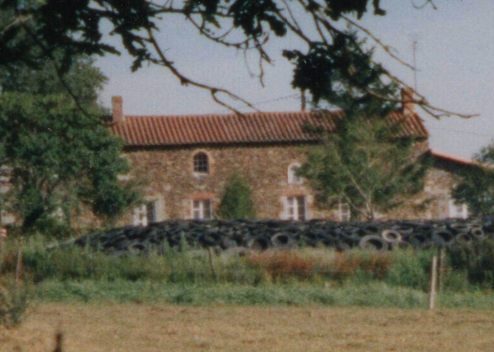
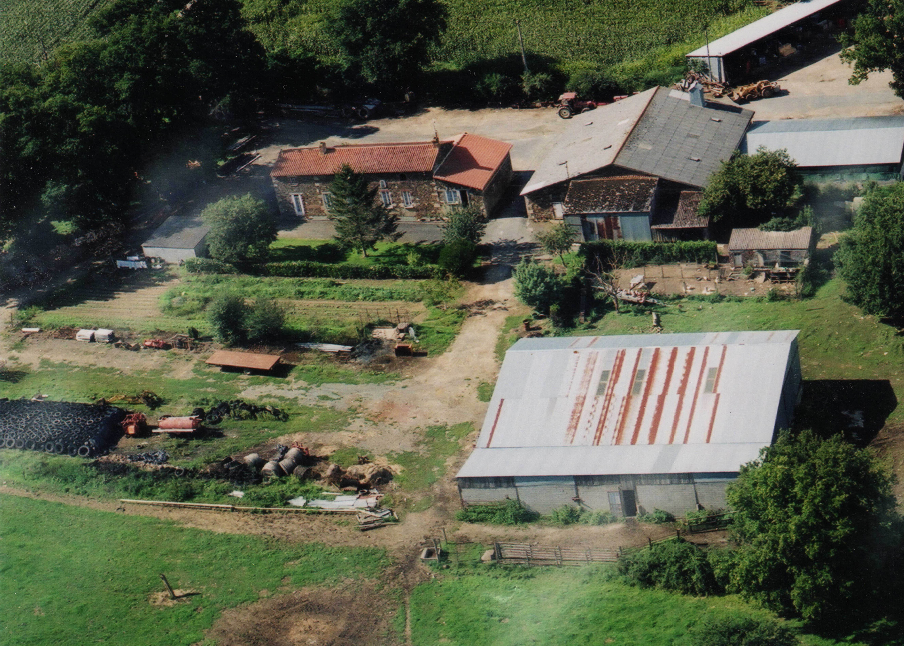
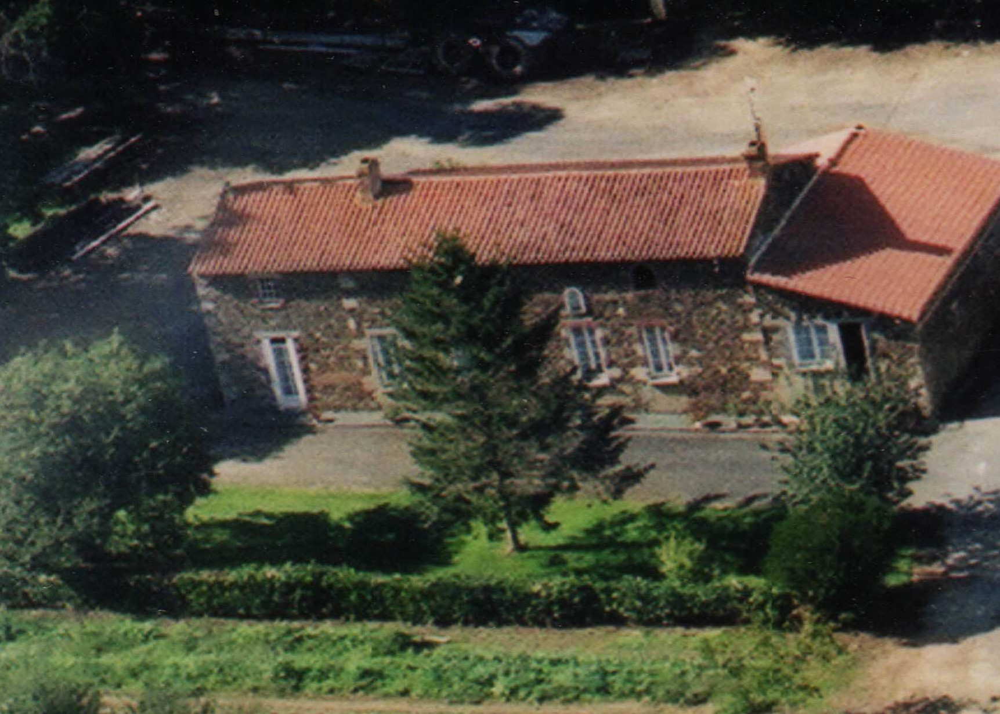
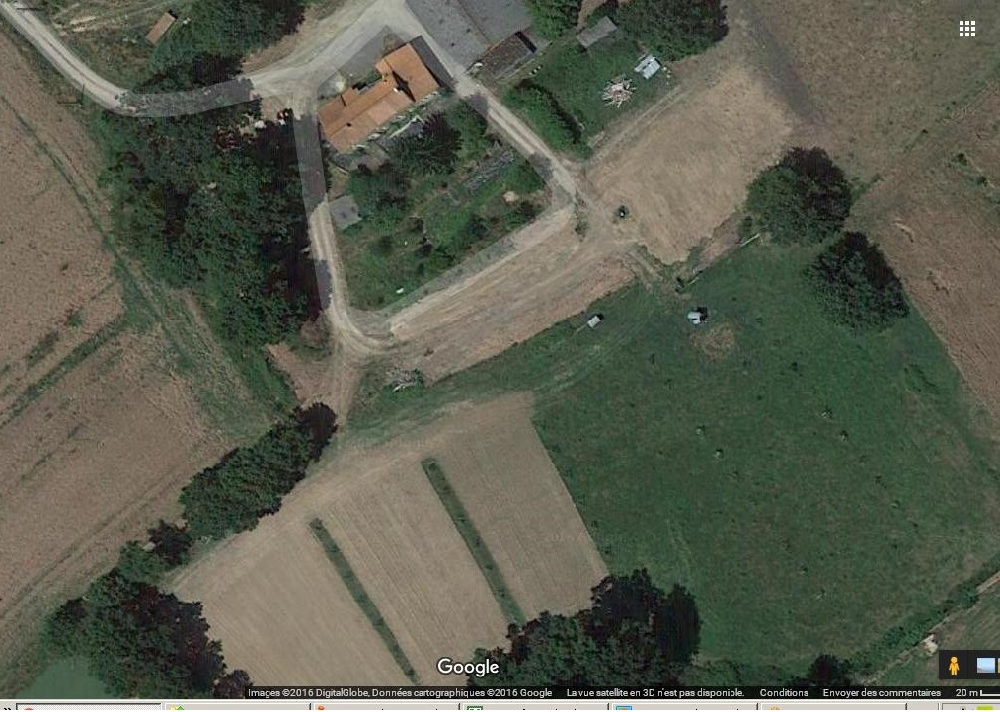
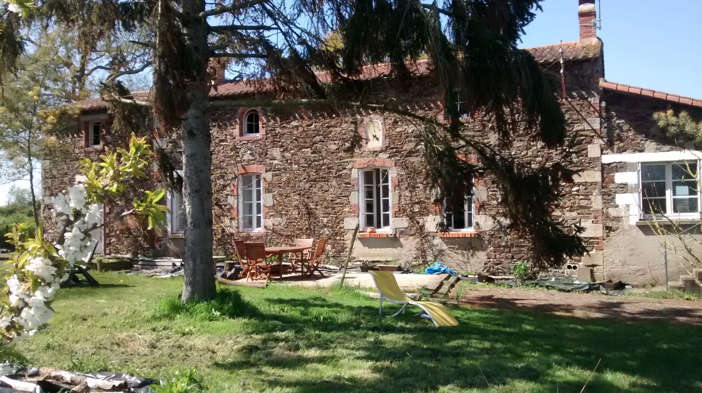
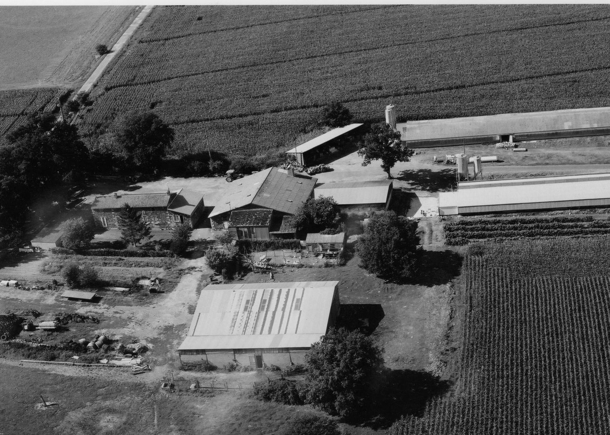
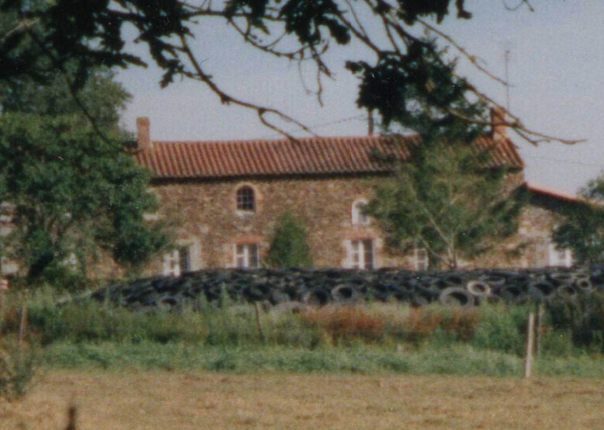
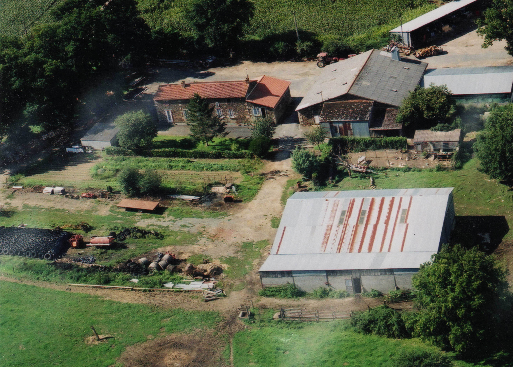
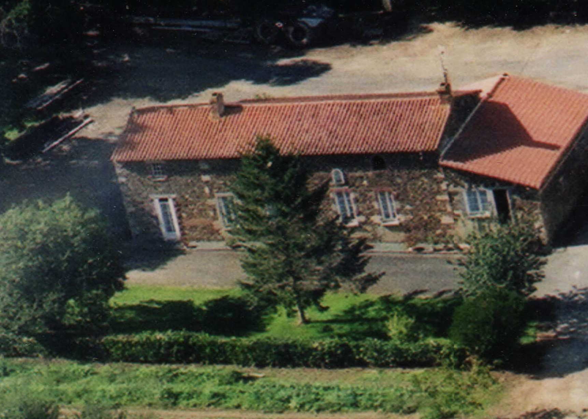
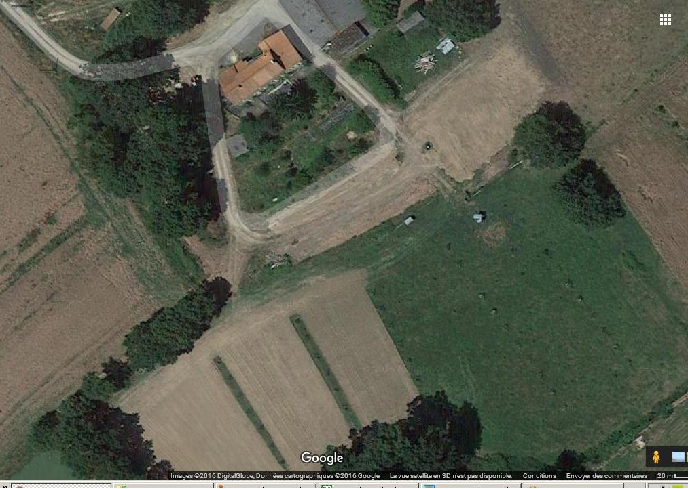
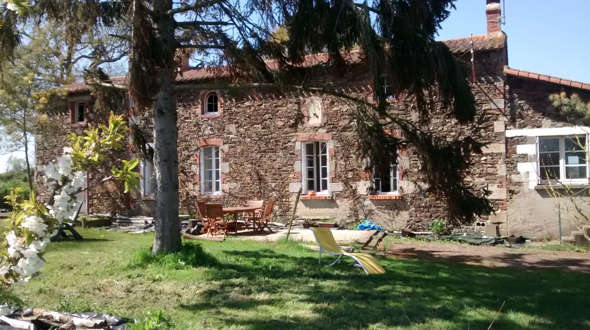
Récupération de la maison ainsi que de ses 4 hectares. A partir de ce moment, nous passons toutes nos vacances en Vendée. Débutent alors les travaux de rénovation.
Plantation d'arbres sur quelques parcelles pour la biodiversité. Les arbres ont beaucoup souffert au départ avec les vaches mais désormais ils ont bien grandi.
Fin des gros travaux. Nous quittons Sargé pour nous partager entre la ferme et notre nouvel appartement à Paris.
Pour fêter avec les amis et voisins 20 ans de mariage, le départ en retraite de Tancrède et le début de l'activité de maraichage. Beaucoup de choses à fêter pour une seule soirée !
Création de l'entreprise agricole de la Sapinière et démarrage de la conversion en bio. Ca y est, c'est le début d'une nouvelle aventure !
Mise en place du premier tunnel avec la grande bâche qui a bien failli s'envoler plus d'une fois. Livraison des premiers paniers à Paris à une dizaine d'abonnés.
Accueil du premier camp scout à la ferme pendant 2 semaines ! Très sympa. On recommencera l'an prochain.
Mise en place du deuxième tunnel.
Isolation du mur externe de la cuisine made by de Guerry.
Accueil pour la seconde fois d'un camp scout en échange de services.
Après 2 ans de conversion en bio nous y voila ! Nos produits ont désormais le label.
Jusqu'ici nous n'étions à la ferme qu'à temps partiel. Maintenant nous avons 2 fois plus de temps et de bras avec Christine.